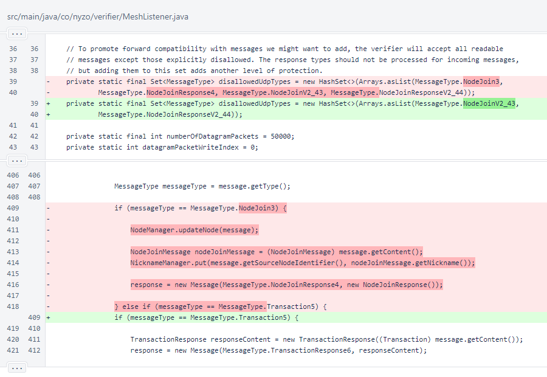
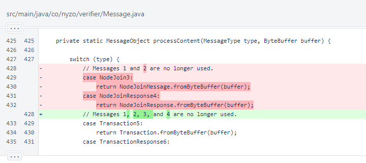
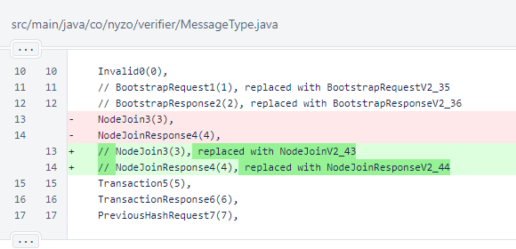
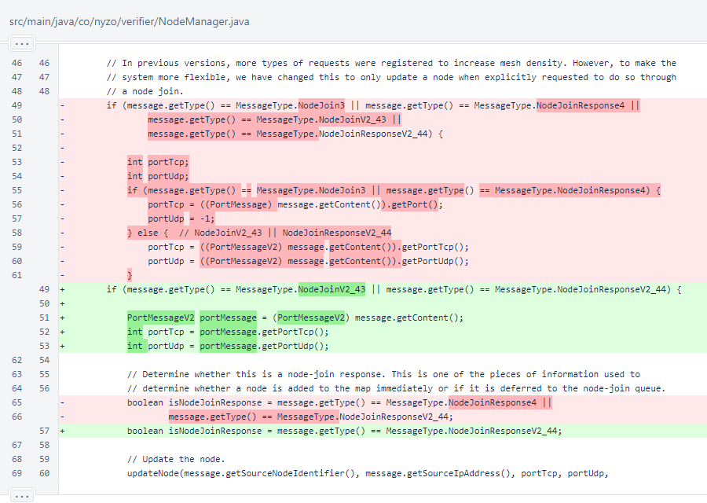

Nyzo version 595 (commit on GitHub) completely removes the legacy node-join messages.
This version affects code used by the verifier, but it will not significantly affect operation. It removes a message that has been obsolete since version 510.
This change is being made to remove legacy code that was a detriment to readability, especially to those who have not followed the evolution of Nyzo. We feel that the purported advantages of open-source software are largely absent when only a single group of developers actively works on a project, and we will continue to work to make the Nyzo code as approachable and as readable as we can to encourage more people to understand the project and contribute to it.
When UDP messaging was added in version 510, the NodeJoinV2_43 and NodeJoinResponseV2_44 message types were added to accommodate the UDP port in the message. In version 521, sending of legacy node-join messages was removed from NodeManager.sendNodeJoinRequests(). In version 572, in-kind responses to legacy node-join messages were eliminated.
So, these messages have been effectively obsolete for 85 versions, and they have been entirely unused for 23 versions. They can be safely removed.
In MeshListener, the NodeJoin3 and NodeJoin4 types were removed from the disallowedUdpTypes set. Also, processing of the NodeJoin3 type was removed from the response() method that provides responses for all incoming messages.
In Message.processContent(), the method that deserializes objects from messages, processing of NodeJoin3 and NodeJoinResponse4 was eliminated.
In the MessageType enumeration, the NodeJoin3 and NodeJoinResponse4 messages were commented out. As with other legacy message types, these were left in place for reference.
Note that these message type numbers can be reused in the future if necessary. The type is stored as a 2-byte (16-bit) integer in serialized form, which allows for 65536 possible values. However, test messages start at 200, leaving only the 1-199 range for standard-operation messages. Currently, the highest-numbered message in this group is IpAddressResponse54.
In NodeManager, NodeJoin3 and NodeJoinResponse4 are no longer handled.
